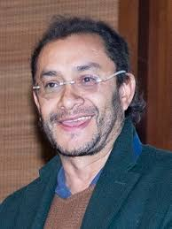

GUÍA PARA EL DISEÑO DE ESPACIOS ACADÉMICOS EN MODALIDAD VIRTUAL
INFORMACIÓN GENERAL DEL ESPACIO ACADÉMICO | |
Unidad académica/administrativa | Departamento de Formación Lasallista |
Programa(s) | Maestría en Estudios Sociales de la Religión |
Nombre del espacio académico | Investigación III |
Créditos | 3 |
Asesor(a) tecno pedagógico (a) | Sergio Andrés Hernández Gómez |
Adecuador(a) pedagógico(a) (lo completa DEE) | |
Fecha elaboración | 3-05-2026 |
Fecha actualización | |
Autor(es) del diseño del espacio académico (modalidad e-learning) | |
Nombres y Apellidos | Jorge Eliécer Martínez Posada |
Perfil profesional (máx. 200 palabras) de cada autor | Post doctor en Bioética Universidad del Bosque, Post doctor en Filosofía Universidad de Cádiz, Estudios de Postdoctorado en Ciencias Sociales CINDE- CLACSO. Doctor en Filosofía programa Historia de la Subjetividad Universidad de Barcelona, Doctor en Ciencias Sociales, Niñez y Juventud CINDE-UM, Diploma de Estudios Avanzados (DEA) en Filosofía Universidad de Barcelona. Magíster en Desarrollo Educativo y Social CINDE- UPN, Diplomado en el "Campo religioso en América Latina: continuidades, transformaciones y conflicto" CLACSO, Licenciado en Filosofía Universidad de San Buenaventura. Investigador docente en los temas de epistemología, ética- políticas publicas, biopolítica, estudios sociales de la religión y subjetividad. |
Link al CVLAC (u otro enlace a su de hoja de vida en línea) | scienti.minciencias.gov.co/cvlac/visualizador/generarCurriculoCv.do?cod_rh=0000510297 |
Foto del perfil |  |
Datos de contacto (indique su número celular de contacto): 31545157856 | |
Correo electrónico | |
OPCIÓN METODOLÓGICA DEL ESPACIO ACADÉMICO (redacción dirigida al estudiante)
El espacio académico Investigación III cuenta con un énfasis metodológico orientado al procesamiento, análisis e interpretación de datos cualitativos. La metodología del curso se centra en el trabajo aplicado sobre los materiales empíricos de los propios proyectos de investigación de los estudiantes.
A lo largo del curso se desarrollarán actividades como talleres de codificación, construcción de matrices analíticas, ejercicios de interpretación, escritura progresiva y espacios de retroalimentación colectiva. Se privilegia una relación reflexiva entre teoría, metodología y experiencia empírica, entendiendo el procesamiento de datos no como una operación técnica, sino como una práctica de producción de inteligibilidad sobre los procesos de subjetivación, los discursos y las prácticas religiosas.
Bienvenidos al espacio académico Investigación III: Recolección de información cualitativa y procesamiento de datos, cuyo sentido es acompañar al estudiante en la construcción del corpus empírico y en el desarrollo de estrategias de análisis en el marco de su proyecto de investigación.
Para lograr esta meta de aprendizaje, el curso se encuentra organizado en cuatro (4) unidades de estudio.
La primera unidad busca comprender los fundamentos de la investigación cualitativa y la naturaleza del dato como construcción.
La segunda unidad busca diseñar estrategias de recolección de información cualitativa.
La tercera unidad busca desarrollar procesos de organización, codificación y categorización del material empírico.
Y, finalmente, la cuarta unidad busca construir interpretaciones y avanzar en la escritura de resultados de investigación.
Con estos elementos, el curso aporta al desarrollo de la competencia del programa orientada a la formulación, análisis e interpretación de procesos sociales en el campo de los Estudios Sociales de la Religión.
PLAN DE FORMACIÓN DEL ESPACIO ACADÉMICO (clic para ver ejemplos) | |||||
Unidad | Resultados* | Contenidos de la unidad | Actividades | Semanas | % |
UNIDAD 1 Fundamentos del dato cualitativo en los Estudios Sociales de la Religión y construcción del campo de investigación | Diseñar estrategias de recolección de información cualitativa articuladas con el problema de investigación | Naturaleza del dato cualitativo Dato como construcción Entrevista Observación Diario de campo Ética en investigación | Encuentro virtual 1. Descripción: Introducción al curso | Semana 1 | .. |
Actividad 1. Ficha crítica aplicada al problema de investigación Descripción ampliada: Producto:
| Semana 1 a 3 | 10% | |||
Encuentro virtual 2. Coloquio: el dato como construcción y el campo de investigación | Semana 3 -5 y 6 | .. | |||
Unidad 2. Construcción del corpus empírico en los Estudios Sociales de la Religión | Diseñar estrategias de recolección de información cualitativa coherentes con el problema de investigación. |
| Encuentro virtual 3. Organización del corpus empírico Descripción: se presentarán los criterios metodológicos para la construcción del corpus empírico, enfatizando en su relación con el problema de investigación y el enfoque teórico. Se discutirán ejemplos de organización del material y se orientará el proceso de sistematización de datos cualitativos. | Semana 7. | - |
Actividad 2. Matriz de organización del corpus Descripción del producto: Producto:
Adicionalmente, se debe anexar un breve texto (1–2 páginas) donde el estudiante explique los criterios utilizados para organizar el corpus.
| Semana 7-9 | 20% | |||
Unidad 3: Procesamiento del corpus empírico: codificación y categorización en los Estudios Sociales de la Religión | Aplicar estrategias de codificación y categorización para procesar el material empírico, identificando unidades de sentido, relaciones analíticas y configuraciones interpretativas en coherencia con el enfoque metodológico del proyecto. |
| Encuentro virtual 4. Procesamiento de datos cualitativos: del dato a la categoría | Semana 10 | - |
ACTIVIDAD 3. Codificación comentada del material empírico. | Semana 10-13 | 10% | |||
ACTIVIDAD 3. Matriz categorialDescripción del productoEntrega integrada por:
| Smana13-15 | 30% | |||
UNIDAD 4. Interpretación del hecho social religioso y escritura de resultados | Construir interpretaciones argumentadas a partir del procesamiento de datos, articulando categorías analíticas, material empírico y referentes conceptuales, mediante una escritura académica rigurosa y coherente con el enfoque metodológico del proyecto. |
| Encuentro virtual 5. Interpretación y escritura del análisis cualitativo | Semana 16 | |
Actividad 4 – Construcción del análisis interpretativoDescripción del productoDocumento final (8–10 páginas) correspondiente al apartado de resultados de la investigación, en el que el estudiante desarrolla un análisis interpretativo organizado por categorías o ejes analíticos. El texto debe articular de manera coherente:
Se espera que el documento evidencie capacidad argumentativa, profundidad analítica y coherencia metodológica, evitando la descripción y privilegiando la interpretación. . | Semana 16-18 | ||||
Descripción ampliada El estudiante elaborará un primer ejercicio de interpretación en el que articule las categorías construidas con el material empírico y el marco conceptual de su investigación. Esta actividad busca evidenciar la transición entre el nivel de organización/categorización y la producción de sentido, es decir, el paso del dato al argumento. ProductoTexto analítico (3–4 páginas) que incluya:
| |||||
UNIDAD DIDÁCTICA 1: Fundamentos del dato cualitativo en los Estudios Sociales de la Religión y construcción del campo de investigación | |||||||||||||||||||
Descripción general | |||||||||||||||||||
Resumen | Esta unidad introduce al estudiante en la comprensión del dato cualitativo en el marco de los Estudios Sociales de la Religión, no como un insumo dado, sino como una construcción situada que emerge de la relación entre el problema de investigación, el enfoque teórico y el campo empírico. Más que centrarse únicamente en técnicas, la unidad propone una reflexión sobre cómo se produce la información cuando se investigan prácticas religiosas, experiencias espirituales, discursos institucionales o dinámicas de la esfera pública. En este sentido, el dato no es previo al análisis, sino que comienza a configurarse desde las decisiones iniciales del investigador. Como resultado, el estudiante avanzará en la delimitación de su campo de investigación y en la definición del tipo de información que requiere, generando los primeros insumos que servirán de base para la construcción del corpus empírico y su posterior procesamiento en las siguientes unidades. | ||||||||||||||||||
Preguntas orientadoras | ¿Qué significa producir datos en el campo de los estudios sociales de la religión? ¿Cómo se configuran los datos cuando investigamos prácticas, creencias o discursos religiosos? ¿Qué relación existe entre el problema de investigación, el enfoque teórico y el tipo de información que se construye? ¿Cómo se delimita un campo empírico en investigaciones sobre religión y espiritualidad? | ||||||||||||||||||
Detalles de la Unidad | |||||||||||||||||||
ACTIVIDADES DE APRENDIZAJE (redacción dirigida al estudiante) | |||||||||||||||||||
ACTIVIDAD 1: Ficha crítica aplicada al problema de investigación | |||||||||||||||||||
¿Qué vamos a lograr? Delimitar de manera fundamentada un problema de investigación en los estudios sociales de la religión, identificando el tipo de dato cualitativo pertinente y comprendiendo cómo se construye dicho dato en contextos reales de investigación. | |||||||||||||||||||
¿Cómo lo vamos a lograr? Apreciado estudiante, En esta actividad iniciarás la construcción de tu proyecto de investigación. Para ello, desarrollarás una ficha crítica que te permitirá articular el problema, el hecho social religioso y el tipo de dato cualitativo más adecuado para su estudio. Sigue los pasos que se describen a continuación: Fase 1: Delimitación del problema de investigaciónDefine de manera clara y concreta:
Producto parcial: Párrafo de formulación del problema (150–200 palabras). Fase 2: Identificación del hecho social religiosoDescribe:
Producto parcial: Descripción analítica (150–200 palabras). Fase 3: Actores y escenariosReconoce:
Producto parcial: Esquema o descripción estructurada (puede ser texto o tabla). Fase 4: Definición del tipo de dato cualitativoEstablece:
Producto parcial: Justificación argumentada (200 palabras). Fase 5: Reflexión metodológica inicialReflexiona sobre:
Producto parcial: Texto reflexivo (200–250 palabras). Producto finalDocumento académico (3–4 páginas) que integre:
Requisitos formales:
Recursos de apoyoLecturas obligatorias:
Lecturas complementarias:
Estrategia de retroalimentación
| |||||||||||||||||||
¿Cómo lo vamos a evaluar?
| |||||||||||||||||||
Información para el equipo de producción de la DEE | |||||||||||||||||||
Herramientas de la plataforma virtual (Marque con una X solo si conoce la herramienta a utilizar):
| |||||||||||||||||||
Lecturas de referencia para la actividad
| |||||||||||||||||||
UNIDAD DIDÁCTICA 2Construcción del corpus empírico en los Estudios Sociales de la Religión | |||||||||||||||||||
Descripción general | |||||||||||||||||||
Resumen: Esta unidad se centra en la construcción del corpus empírico como un momento clave del proceso investigativo en los Estudios Sociales de la Religión. No se trata únicamente de acumular información, sino de organizar, delimitar y dar sentido al conjunto de materiales producidos en la investigación. El corpus puede estar compuesto por entrevistas, observaciones, registros de prácticas religiosas, discursos institucionales, documentos o experiencias espirituales, los cuales deben ser organizados en función del problema de investigación y del enfoque metodológico adoptado. La unidad permite al estudiante pasar de la producción inicial del dato (Unidad 1) a su sistematización como material analizable, estableciendo criterios de selección, organización y uso. | |||||||||||||||||||
Preguntas orientadoras:
| |||||||||||||||||||
Detalles de la Unidad | |||||||||||||||||||
ACTIVIDADES DE APRENDIZAJE (redacción dirigida al estudiante) | |||||||||||||||||||
ACTIVIDAD 2. Matriz de organización del corpus empírico | |||||||||||||||||||
¿Qué vamos a lograr? Organizar el corpus empírico de la investigación, estableciendo criterios claros de selección, clasificación y uso del material en coherencia con el problema de investigación en los Estudios Sociales de la Religión. | |||||||||||||||||||
¿Cómo lo vamos a lograr? Apreciado estudiante, en esta actividad vas a transformar la información producida en tu investigación en un corpus empírico estructurado, que será la base del análisis en las siguientes unidades. Para ello, debes: 1. Identificación del material empírico
2. Clasificación del material
3. Delimitación del corpus
4. Organización sistemática
5. Reflexión metodológica
Producto
Material bibliográfico: | |||||||||||||||||||
¿Cómo lo vamos a evaluar?
| |||||||||||||||||||
Información para el equipo de producción de la DEE | |||||||||||||||||||
Herramientas de la plataforma virtual (Marque con una X solo si conoce la herramienta a utilizar):
Herramientas web externas a la plataforma _____One drive para almacenar los archivos de las obras _______ | |||||||||||||||||||
Lecturas de referencia para la actividad
| |||||||||||||||||||
UNIDAD DIDÁCTICA 3: Procesamiento del corpus empírico: codificación y categorización en los Estudios Sociales de la Religión | |||||||||||||||||||
Descripción general | |||||||||||||||||||
Resumen Esta unidad se centra en el procesamiento del corpus empírico, entendido como el tránsito entre la organización del material (Unidad 2) y la producción de análisis. El estudiante aprenderá a trabajar el corpus mediante estrategias de codificación y categorización, identificando unidades de sentido en prácticas religiosas, discursos, experiencias espirituales y dinámicas de la esfera pública. En los Estudios Sociales de la Religión, este proceso no consiste únicamente en clasificar información, sino en producir relaciones analíticas que permitan comprender cómo se configuran las formas de creer, practicar y vivir lo religioso en contextos específicos. La unidad permite pasar del registro del dato a su transformación en material analítico, preparando la construcción de interpretaciones en la siguiente fase del curso. | |||||||||||||||||||
Preguntas orientadoras
| |||||||||||||||||||
Detalles de la Unidad | |||||||||||||||||||
ACTIVIDADES DE APRENDIZAJE (redacción dirigida al estudiante) | |||||||||||||||||||
ACTIVIDAD 3. Codificación del corpus empírico | |||||||||||||||||||
¿Qué vamos a lograr? Procesar el corpus empírico mediante codificación y categorización, identificando sentidos, relaciones y configuraciones del fenómeno religioso estudiado. | |||||||||||||||||||
¿Cómo lo vamos a lograr? Apreciado estudiante, en esta actividad vas a transformar tu corpus en material analítico. Para ello, debes: 1. Selección de fragmentos clave
2. Codificación
3. Construcción de categorías
4. Relación con el fenómeno religioso
5. Organización analítica
Producto
Material bibliográfico obligatorio | |||||||||||||||||||
¿Cómo lo vamos a evaluar?
| |||||||||||||||||||
Información para el equipo de producción de la DEE | |||||||||||||||||||
Herramientas de la plataforma virtual (Marque con una X solo si conoce la herramienta a utilizar):
Herramientas web externas a la plataforma _____One drive para almacenar los archivos de las obras _______ | |||||||||||||||||||
Lecturas de referencia para la actividad ( Disponibles en una carpeta One Drive).
| |||||||||||||||||||
UNIDAD DIDÁCTICA 4 Interpretación del hecho social religioso y escritura de resultados | |||||||||||||||||||
Descripción general | |||||||||||||||||||
Resumen Esta unidad se centra en la interpretación del corpus empírico y la escritura de resultados, entendidas como el momento en el que el análisis cualitativo se transforma en producción de conocimiento. A partir del trabajo realizado en las unidades anteriores —definición del dato, construcción del corpus y procesamiento mediante codificación y categorización—, el estudiante avanzará en la construcción de interpretaciones argumentadas que den cuenta de los fenómenos religiosos estudiados. En los Estudios Sociales de la Religión, interpretar no consiste únicamente en describir prácticas o discursos, sino en comprender cómo se configuran sentidos, relaciones, tensiones y formas de vida religiosa en contextos específicos. La unidad busca que el estudiante logre articular categorías analíticas, material empírico y referentes teóricos mediante una escritura académica rigurosa. | |||||||||||||||||||
Preguntas orientadoras
| |||||||||||||||||||
Detalles de la Unidad | |||||||||||||||||||
ACTIVIDADES DE APRENDIZAJE (redacción dirigida al estudiante) | |||||||||||||||||||
ACTIVIDAD 4: | |||||||||||||||||||
¿Qué vamos a lograr? Construir un análisis interpretativo coherente y argumentado a partir del corpus empírico, articulando categorías analíticas, material empírico y referentes teóricos en el campo de los Estudios Sociales de la Religión. | |||||||||||||||||||
¿Cómo lo vamos a lograr? Apreciado estudiante, en esta actividad vas a consolidar tu investigación. Para ello, debes: 1. Definir ejes analíticos
2. Articular datos y teoría
3. Construir interpretación
4. Elaborar argumentos
5. Redactar resultados
ProductoDocumento final (8–10 páginas) que incluya:
| |||||||||||||||||||
¿Cómo lo vamos a evaluar?
| |||||||||||||||||||
Información para el equipo de producción de la DEE | |||||||||||||||||||
Herramientas de la plataforma virtual (Marque con una X solo si conoce la herramienta a utilizar):
Herramientas web externas a la plataforma _____One drive para almacenar los archivos de las obras _______ | |||||||||||||||||||
Lecturas de referencia para la actividad
| |||||||||||||||||||